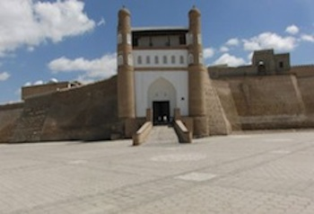

Bukhara: A Step Back
BUKHARA, Uzbekistan — It was June 17, 1842, when two British army officers, Captain Charles Conolly and Lieutenant Colonel Stoddart, were dragged from the Emir's citadel in Bukhara through the baying mob.
There, in the shadow of the giant sandstone fortress, they were forced to dig their own graves. Painfully malnourished, their clothing and hair riddled with vermin and lice, both men were unrecognizable as the heroes of Victorian Britain as they had once been feted.
Both had spent the preceding years housed in the citadel's legendary Bug Pit, a six-meter-deep hole into which buckets of scorpions, maggots and whatever filth the jailors could lay their hands on would be poured daily. Stoddart's offense was just that — a violation of protocol. He had made the mistake four years earlier of riding his horse into the Emir's fortress to deliver a letter signed by India's Governor General — instead of by the Emir's equal, Queen Victoria. Conolly's mistake was to think he might rescue Stoddart.
Thankfully, Bukhara now offers a more civilized welcome to international travelers. Woefully neglected by various Soviet leaders, either unwilling or unable to compete with Bukhara's reputation as the most holy of cities, the ancient former Uzbek capital has been restored to much of its former glory.